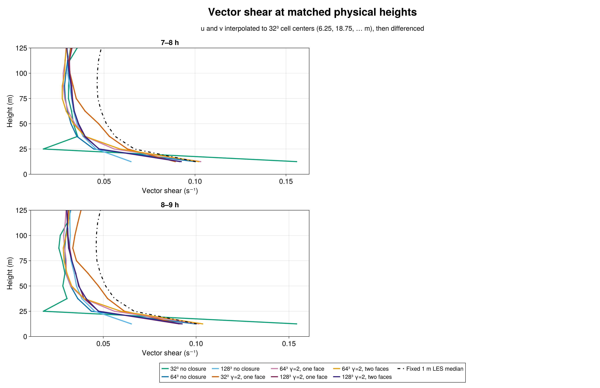
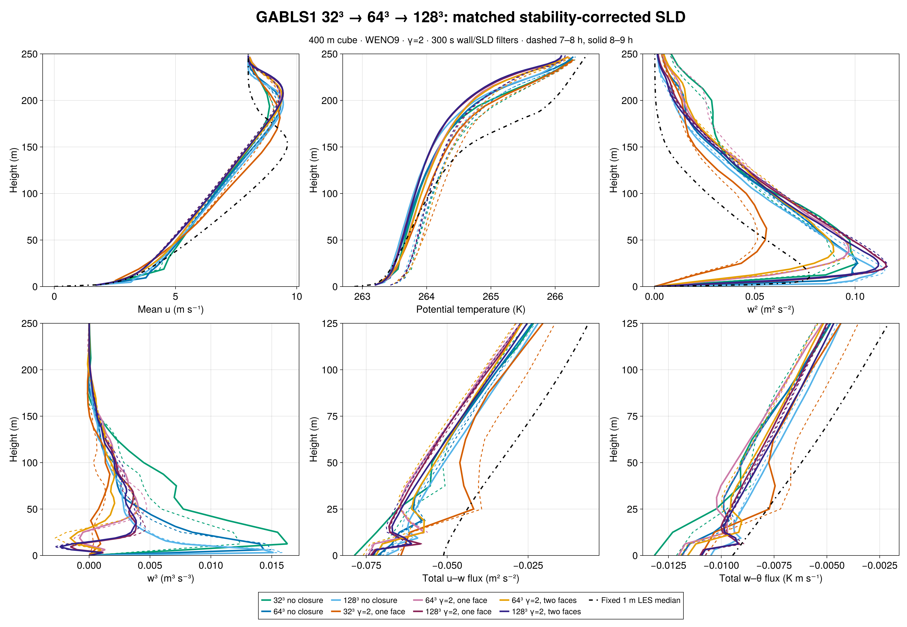

The matched 128³ runs do not establish grid convergence of the γ=2 SurfaceLayerDiffusivity (SLD) solution. During 8–9 h, one-face SLD vector shear on common 12.5 m intervals is 0.09152/0.06140/0.05235 s⁻¹ at 32³, 0.10144/0.05600/0.03951 s⁻¹ at 64³, and 0.09080/0.04759/0.03967 s⁻¹ at 128³ (at heights 12.5/25/37.5 m). The fixed 1 m LES intercomparison median is 0.10038/0.06666/0.05607 s⁻¹. The 128³ two-face case gives 0.09242/0.04739/0.04083 s⁻¹. Its second face has little effect on shear above 12.5 m. The final two one-face grids nearly agree at 37.5 m, but both remain well below the median there and disagree at the lower heights.

All runs use the 400 m GABLS1 cube, WENO9 advection, seed 123, the same coarse perturbation realization prolonged to each grid, filtered rough-wall drag, and 300 s wall and SLD response filters. The SLD cases use scheme-native advective reconstruction, factor one, and stable-similarity strength γ=2. The 128³ spacing is 3.125 m. Three 128³ cases were run for nine simulated hours: filtered no closure, γ=2 one-face SLD, and γ=2 two-face SLD. The two preceding grids use matched configurations. The fixed 1 m median is an LES intercomparison reference, not an observation or universal truth.
One-face SLD reaches z=12.5/6.25/3.125 m at 32³/64³/128³. Two-face SLD reaches z=12.5 m at 64³ and only z=6.25 m at 128³. The implementation supports at most two faces, so none of the 128³ runs retains the 12.5 m physical support of 32³ one-face or 64³ two-face SLD. Refinement here changes both grid spacing and the closure's physical reach. The three-grid trend is valuable but is not a formal convergence demonstration or a fixed-support test.
To compare shear, u and v are each interpolated to 32³ cell centers before computing vector differences across the same 12.5 m intervals. Native-grid shear is shown separately because its intervals differ by grid. Both 7–8 h and 8–9 h windows appear in the figures and complete metrics.
At 8–9 h the 128³ no-closure shear is 0.06509/0.04539/0.03847 s⁻¹, while the 128³ one-face SLD shear is 0.09080/0.04759/0.03967 s⁻¹. SLD improves the first interval but barely changes the next two. Peak resolved w² is 0.11063 m² s⁻² without closure, 0.11556 with one face, and 0.11171 with two faces. By comparison the 32³ one-face peak is 0.05588 and the 64³ one-face peak is 0.09688 m² s⁻². Resolved turbulence therefore remains substantially grid-sensitive. At 18.75 m, interpolated w³ for the 128³ one- and two-face cases is +0.002489 and +0.002144 m³ s⁻³, versus negative values at 64³. The fixed 1 m archive has no w³ median; the sign change is a sensitivity result, not a fidelity ranking.

During 8–9 h, friction velocity is 0.28526 m s⁻¹ for 128³ no closure, 0.29801 for one-face SLD, and 0.29644 for two-face SLD. The corresponding surface heat fluxes are −0.01049, −0.01100, and −0.01093 K m s⁻¹. Wall histories and transport partition show these alongside the 32³ and 64³ cases. At 128³ face 2 (z=6.25 m), the two-face mean momentum viscosity is 0.04693 m² s⁻¹, resolved u–w flux is −0.05477 m² s⁻², SGS u–w flux is −0.00619 m² s⁻², and the independently reported WENO correction is −0.01079 m² s⁻². The corresponding 64³ second face lies at z=12.5 m, so its transport partition is not a same-height comparison.
The immutable 128³ simulation freeze is /shared/home/greg/review-coordination/sld-gabls1-n128-freeze-20260923-v1: BreezeEvaluation simulation commit 27261b313409d81cf7164bbf519970bc60b50e6f, Breeze commit b0338bc2921526431763e54caf41675ad062a5d4, full source-manifest SHA-256 dfdcd8846a756b73b7006b67a0bdcd565a2df5400bf769e64f9d7d5345e3e233. H100 gate 7674 passed CUDA parity 34/34 and 600 s validators 15/15 (no closure), 32/32 (one face), and 38/38 (two faces). Science Slurm array 7688 tasks 1–3 each reached CASE_DONE final_time_s=32400.0 and durable exit zero. Independent Julia audits admitted all three exports: source and paired initial state, native 128/129 heights, exact sampling times, finite fields, evolving wall filter, surface flux and scheme-native transport identities. Both SLD cases passed 55 saved local 1/L and similarity-factor records through nine hours. An audit-only copied face-2 height was corrected to 6.25 m before admission; the frozen simulation source was unchanged. The compact exports, figure source, data auditor, corrected stability auditor, and durable evidence accompany this chapter. Full JLD2 histories and checkpoints remain in the pcluster campaign.
{kind=link}
{kind=link}